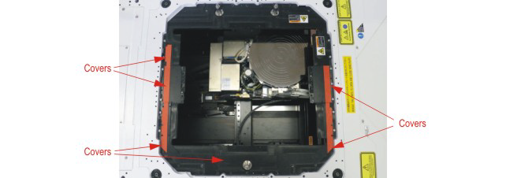

Installing Direct-Probe bridge beam on TEL Precio wafer prober
About this task
This topic tells you how to position and affix the WSRF Bridge Beam on the TEL Precio wafer prober.
Before you begin
Remove all six cable channel covers, see figure below.

CAUTION Two persons are required to install the Direct Probe™ Bridge Beam hardware. This is to ensure that no
damage is caused to the sensor cables or to the pneumatic hoses leading to the
Bridge Beam.
Make sure you have covered the wafer prober chuck with protective material. Refer to Protecting the chuck on the wafer prober for instructions.
Procedure
Results
You have mounted the WSRF Bridge Beam hardware on the TEL Precio Wafer Prober.
What to do next
Move on to Connecting up Direct-Probe bridge beam on TEL Precio wafer prober.
Functional changes
- Introduced in SmarTest 7.4.2